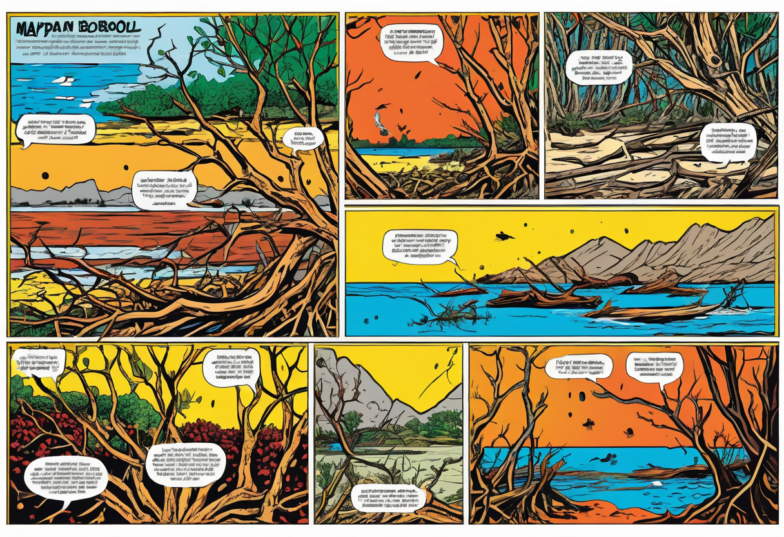
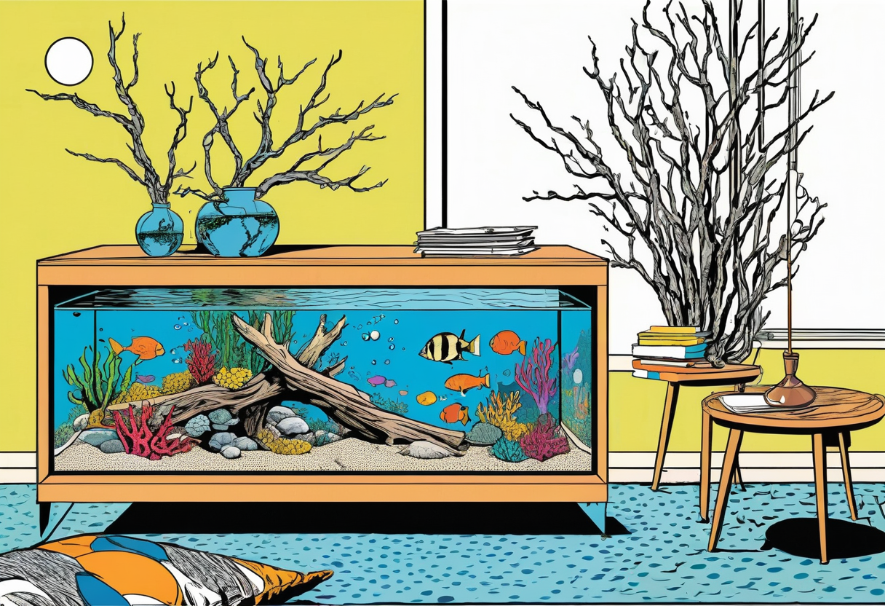

Aquarium Wurzeln und Holz – Natürliche Dekoration mit Wirkung auf die Wasserwerte
Wurzeln und Holz gehören zu den beliebtesten Dekorationselementen in der Aquaristik. Sie verleihen dem Becken eine natürliche Optik, schaffen Versteckmöglichkeiten und Struktur für Fische und Wirbellose. Doch Holz ist weit mehr als nur Dekoration: Es beeinflusst aktiv die Wasserchemie, senkt den pH-Wert und gibt wertvolle Gerbstoffe ab, die das Wohlbefinden vieler Fischarten fördern. In diesem Artikel erfährst du alles über die verschiedenen Holzarten, ihre Eigenschaften und die richtige Vorbereitung für den Einsatz im Aquarium.
Warum Holz im Aquarium?
Holz im Aquarium erfüllt gleich mehrere wichtige Funktionen. Optisch bildet es das Grundgerüst der Aquariengestaltung – ähnlich wie Steine, aber mit weicheren, organischen Formen. Viele Fischarten nutzen Holz als Rückzugsort, Laichplatz oder Reviergrenze. Besonders für Welse ist Holz unverzichtbar: Sie weiden die Oberfläche nach Aufwuchs ab und benötigen die Cellulose für eine gesunde Verdauung.
Darüber hinaus geben bestimmte Hölzer Gerbstoffe (Tannine) und Huminstoffe an das Wasser ab. Diese senken den pH-Wert und die Karbonathärte, was vor allem für Weichwasserfische aus Südamerika und Südostasien ideal ist. Das Wasser färbt sich leicht gelb-bräunlich – eine völlig natürliche Färbung, wie sie in vielen tropischen Gewässern vorkommt. Zudem wirken die Gerbstoffe leicht antibakteriell und antifungal, was die Gesundheit der Fische fördert.


Die wichtigsten Holzarten im Überblick
Nicht jedes Holz ist für den Einsatz im Aquarium geeignet. Hierzschnitt oder behandeltes Holz aus dem Baumarkt können Giftstoffe enthalten und das Wasser belasten. Die folgenden Holzarten haben sich in der Praxis bewährt:
Moorkienwurzel
Die Moorkienwurzel ist der absolute Klassiker unter den Aquarienhölzern. Es handelt sich um uralte, über Jahrhunderte im Moor konservierte Kiefernwurzeln. Sie sind extrem hart, sinken sofort und geben nur sehr langsam Gerbstoffe ab. Moorkienwurzeln haben eine markante, oft skurrile Wuchsform mit vielen Verzweigungen, die sich hervorragend für naturnahe Gestaltungen eignen. Sie sind nahezu unverrottbar und können jahrzehntelang im Aquarium verbleiben.
Mangrovenholz
Mangrovenholz stammt von Mangrovenbäumen aus tropischen Küstenregionen. Es hat eine charakteristische graubraune Farbe und eine faserige Oberfläche. Mangrovenholz gibt ebenfalls Gerbstoffe ab, allerdings weniger stark als Moorkienholz. Es ist relativ leicht und muss oft mehrere Tage oder Wochen vor dem Einsatz gewässert werden, bis es von alleine untergeht. Mangrovenholz eignet sich besonders für offene, verzweigte Strukturen.
Seemandelbaumholz
Seemandelbaumholz (Terminalia catappa) ist eigentlich die Frucht des Seemandelbaums, nicht das Holz selbst. Die getrockneten Früchte werden ins Aquarium gegeben und geben innerhalb weniger Wochen stark konzentrierte Gerbstoffe ab. Sie färben das Wasser intensiv braun und senken den pH-Wert deutlich. Seemandelbaumblätter sind ebenfalls sehr beliebt und werden oft für die Zucht von Skalaren und Diskusfischen verwendet.
Drachenwurzel
Die Drachenwurzel (auch als Rhizomholz bekannt) stammt von tropischen Farnen und hat eine knorrige, drachenartige Struktur. Sie ist sehr hart und sinkt gut. Drachenwurzeln geben kaum Gerbstoffe ab und eignen sich daher auch für Aquarien, in denen ein neutraler pH-Wert erwünscht ist. Ihre unregelmäßige Oberfläche bietet idealen Halt für Aufsitzerpflanzen wie Anubias und Javafarn.
Korkröhre
Korkröhren sind keine Wurzeln, sondern aufbereitete Rinde der Korkeiche. Sie sind sehr leicht und müssen zunächst beschwert werden, bis sie vollgesogen sind. Korkröhren bieten Höhlen und Durchschlüpfe, die von Welsen, Garnelen und kleinen Buntbarschen gerne als Versteck genutzt werden. Sie verrotten nicht und können auch in Feuchtbiotopen oder Paludarien eingesetzt werden.
🛒 Empfohlene Produkte
Holz richtig vorbereiten und einsetzen
Bevor Holz ins Aquarium kommt, muss es gründlich vorbereitet werden. Die meisten Hölzer schwimmen zunächst auf und müssen gewässert werden, bis sie von alleine untergehen. Dieser Vorgang kann je nach Holzart und Trocknungsgrad mehrere Tage bis Wochen dauern. Ein beschleunigter Wasserbad oder das Auskochen im Topf hilft, das Holz schneller mit Wasser zu sättigen.
Auskochen oder Wässern?
Das Auskochen von Holz hat mehrere Vorteile: Es tötet eventuell vorhandene Keime, Pilzsporen oder Insektenlarven ab, beschleunigt die Wasseraufnahme und reduziert die anfängliche Gerbstoffabgabe. Allerdings sollten dünne oder filigrane Äste nicht zu lange gekocht werden, da sie sonst spröde werden können. Alternativ reicht auch ein mehrwöchiges Wässern in einem separaten Behälter mit regelmäßigem Wasserwechsel.
Nach dem Einsetzen ins Aquarium kann es in den ersten Wochen zu einem weißen, pelzigen Belag auf dem Holz kommen – das sind Bakterien und Pilze, die sich von den noch vorhandenen Zuckern und organischen Substanzen des Holzes ernähren. Dieser Belag ist völlig harmlos und verschwindet nach einiger Zeit von selbst. Garnelen und Otocinclus-Welse fressen ihn gerne.
Einfluss von Holz auf die Wasserwerte
Holz im Aquarium ist ein aktiver Bestandteil des Ökosystems und beeinflusst die Wasserchemie auf verschiedene Weise:
- pH-Wert-Senkung: Gerbstoffe und Huminstoffe senken den pH-Wert. Besonders Moorkienholz und Seemandelbaumprodukte haben eine starke Wirkung.
- Pufferung der Karbonathärte: Die abgegebenen Huminstoffe binden Calcium- und Magnesiumionen, wodurch die KH sinkt.
- Färbung des Wassers: Tannine färben das Wasser bernsteinfarben bis bräunlich – erwünscht bei Biotopbecken, aber nicht immer im Gesellschaftsbecken.
- Abgabe von Nährstoffen: Mit der Zeit geben ältere Hölzer minimale Mengen an Nährstoffen ab, was das Pflanzenwachstum leicht fördern kann.
Aquarianer, die gezielt Weichwasserfische wie Skalare, Diskus oder südamerikanische Salmler halten, nutzen die gerbstoffhaltige Wirkung von Holz bewusst aus. In afrikanischen Tanganjika- und Malawisee-Becken wird dagegen eher auf gerbstoffarmes Holz wie Drachenwurzel gesetzt, um den hohen pH-Wert nicht zu beeinträchtigen.
Holz mit Pflanzen kombinieren
Holz ist der perfekte Träger für Aufsitzerpflanzen. Anubias, Javafarn, Bucephalandra und verschiedene Moosarten (Java-Moos, Christmas-Moos) wachsen hervorragend auf Holz, da sie ihre Nährstoffe direkt aus dem Wasser beziehen. Die Pflanzen werden mit dünnem Angelfaden oder Spezialkleber auf dem Holz befestigt. Nach einigen Wochen haben sie sich mit ihren Haftwurzeln am Holz verankert und wachsen von selbst weiter.
Besonders schön wirken Kombinationen aus einem zentralen Holzbild mit dichtem Moosbewuchs, umgeben von niedrigen Vordergrundpflanzen und hohen Hintergrundstängeln. Diese Gestaltungsform wird als „Baumstil“ im Aquascaping bezeichnet und erfreut sich großer Beliebtheit.
Probleme und Lösungen
Manchmal treten bei der Verwendung von Holz unerwünschte Begleiterscheinungen auf:
- Weißer Bakterienrasen: Harmlos, verschwindet nach 1–3 Wochen. Abhilfe schaffen Garnelen oder Otocinclus.
- Starke Braunfärbung: Bei zu intensiver Gerbstoffabgabe hilft häufigerer Wasserwechsel oder der Einsatz von Aktivkohle im Filter.
- Schimmel vor dem Einsetzen: Wenn gelagertes Holz schimmelt, großzügig abschneiden und das Holz auskochen.
- Holz schwimmt auf: Mit einem Stein beschweren oder das Holz länger wässern. Moorkienwurzeln sinken meist sofort.
Fazit
Wurzeln und Holz sind weit mehr als bloße Dekoration im Aquarium. Sie gestalten nicht nur die Optik, sondern verbessern aktiv die Lebensbedingungen vieler Fischarten. Von der Wahl der richtigen Holzart über die sorgfältige Vorbereitung bis zur Kombination mit Wasserpflanzen – wer sich mit dem Thema beschäftigt, wird mit einem natürlichen, stabilen Aquarium belohnt. Besonders für Weichwasser- und Schwarzwasserbiotope sind Hölzer wie Moorkienwurzel oder Seemandelbaumholz unverzichtbar. Achte beim Kauf auf unbehandelte Aquarienhölzer aus dem Fachhandel – dann wirst du viele Jahre Freude an deiner natürlichen Unterwasserlandschaft haben.
Mehr zur Einrichtung deines Aquariums erfährst du in unserem Einsteiger-Guide und im Aquascaping-Grundlagen-Artikel.